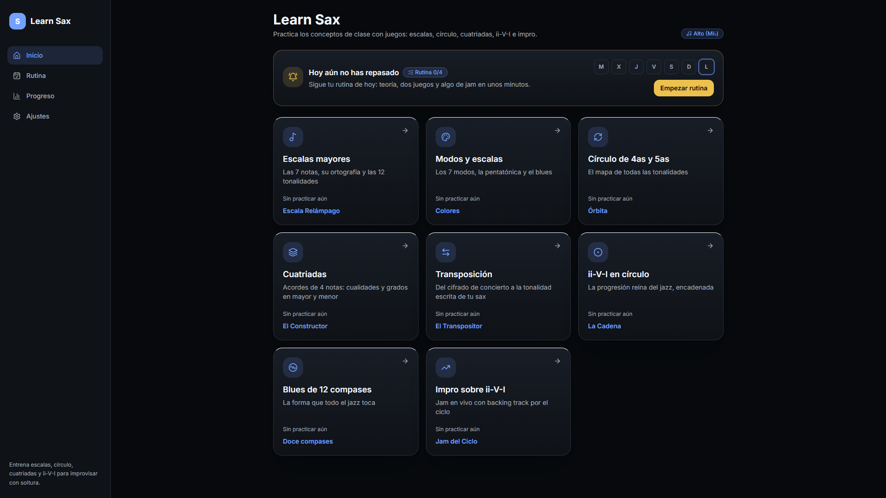

Entrena escalas, círculo de 4as/5as, cuatriadas, ii-V-I, blues e impro con juegos cortos, para saxo soprano, alto y tenor.

Convierte la teoría del saxo en partidas de un minuto, con niveles que suben de dificultad.
Escalas, grados, cuatriadas e ii-V-I con su ortografía correcta y las 12 tonalidades.
Soprano y tenor en Si♭, alto en Mi♭. La transposición es automática.
App web instalable (PWA): abre en el móvil y sigue funcionando sin conexión.
Cada recurso abre con una teoría breve y su juego principal.
Sube de nivel: de construir el acorde a identificarlo de oído.
Un plan diario: teoría, dos juegos y algo de jam.
Las 7 notas, su ortografía y las 12 tonalidades.
Escala RelámpagoLos 7 modos, la pentatónica y el blues.
ColoresEl mapa de todas las tonalidades.
ÓrbitaAcordes de 4 notas: cualidades y grados en mayor y menor.
El ConstructorDel cifrado de concierto a la tonalidad de tu sax.
El TranspositorLa progresión reina del jazz, encadenada.
La CadenaLa forma que todo el jazz toca.
Doce compasesJam en vivo con backing track por el ciclo.
Jam del CicloElige tu instrumento en Ajustes. La app traduce entre el cifrado de concierto y tu tonalidad escrita.
La portada te recuerda repasar y guarda tu progreso de la semana.
Estadísticas por modo de juego y por tonalidad, guardadas en tu dispositivo.
Elige un recurso, o deja que la rutina decida por ti. Gratis y sin instalar.
Funciona en móvil y escritorio · Instálala como app